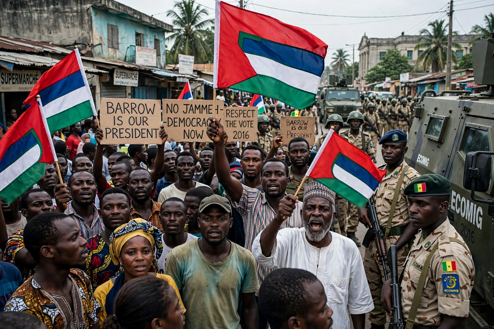

The 2016–17 Gambian constitutional crisis began after incumbent president Yahya Jammeh refused to accept defeat in the December 2016 presidential election to Adama Barrow.

| Gambian constitutional crisis | |
|---|---|
| Date | 9 Dec 2016 – 21 Jan 2017 |
| Location | The Gambia |
| Outcome | Jammeh exiled; Barrow inaugurated |
Jammeh had ruled since a 1994 coup. He initially conceded, then reversed himself on 9 December, citing irregularities, declared a state of emergency, and sought to annul the result.
ECOWAS, led by Senegal and Nigeria, threatened military intervention. Barrow was sworn in at the Gambian embassy in Dakar on 19 January 2017. ECOWAS forces entered Banjul, Jammeh negotiated exile to Equatorial Guinea on 21 January, and Barrow returned to govern.
The episode was hailed as a rare successful regional defence of an election result, though Jammeh departed with state assets, prompting later investigations.
Recreated from memory.